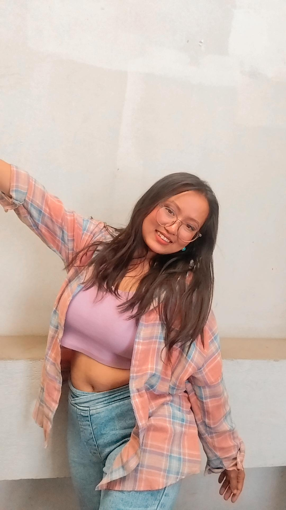

Profile
I am Sumita Tamang, a hardworking student of Geomatics Engineering at Kathmandu University. This website showcases my work, a traverse computation form design to compute the coordinates of the unknown stations using known stations. I am here to apply my learning and share practical solutions in the field of geomatics. Thank you for visiting!!
Back to Welcome